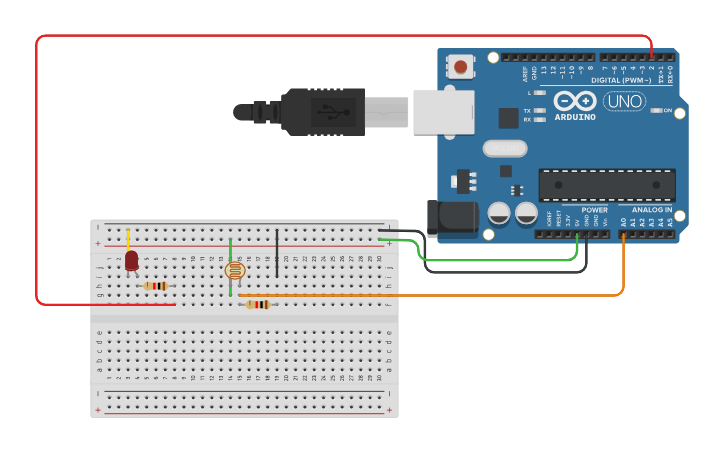

PROJECT 04: LIGHT SENSOR
Analog Inputs & Sensors (LDR)
Project Summary
Digital pins are either ON or OFF. But the real world is analog—light, temperature, and sound vary smoothly. In this project, you will use an LDR (Light Dependent Resistor) to measure light intensity and turn on an LED automatically when it gets dark.
Key Components
- Arduino Uno R3
- LDR (Photoresistor)
- 10kΩ Resistor (Brown-Black-Orange)
- LED & 220Ω Resistor
- Jumper Wires
Circuit Diagram

Pin Connections
| Arduino Pin | Component Connection |
|---|---|
| Pin A0 (Analog) | Junction between LDR and 10kΩ Resistor |
| 5V | Other leg of LDR |
| GND | Other leg of 10kΩ Resistor |
| Pin 13 | Positive Leg of LED |
Step-by-Step Instructions
- Build the Voltage Divider: Connect one leg of the LDR to 5V. Connect the other leg to the 10kΩ resistor.
- Connect the other end of the 10kΩ resistor to Ground (GND).
- Connect the Sensor: Add a wire from the point where the LDR and Resistor meet (the middle junction) to Analog Pin A0.
- Add the Output: Connect an LED to Pin 13 (with a 220Ω series resistor) just like in Project 1.
- Upload the code and open the Serial Monitor (Magnifying glass icon) to see the light values.
Arduino Code
/* Project 4 - Light Sensitive LED
* Reads light value from LDR connected to A0.
* Turns on LED if it gets dark.
*/
const int sensorPin = A0; // LDR connected to Analog Pin 0
const int ledPin = 13; // LED connected to Digital Pin 13
int sensorValue = 0; // Variable to store the sensor reading
void setup() {
pinMode(ledPin, OUTPUT);
Serial.begin(9600); // Start communication with computer
}
void loop() {
// Read the value from the sensor (0 - 1023)
sensorValue = analogRead(sensorPin);
// Print value to Serial Monitor for debugging
Serial.print("Light Level: ");
Serial.println(sensorValue);
// If light level is low (Dark), turn LED ON
// Adjust '500' based on your room lighting!
if (sensorValue < 500) {
digitalWrite(ledPin, HIGH);
} else {
digitalWrite(ledPin, LOW);
}
delay(100); // Short delay for stability
}
How It Works
- Hardware Logic (Voltage Divider):
-
LDR Properties:
An LDR changes its resistance based on light. More Light = Low Resistance. Darkness = High Resistance. -
Analog Input (A0):
The Arduino measures voltage at the point between the LDR and the fixed 10k resistor. As the LDR resistance changes, the voltage shifts. - Code Logic:
-
analogRead(A0):
This converts the voltage (0-5V) into a number between 0 and 1023. -
Serial Monitor:
We useSerial.println()to see the actual numbers on the computer screen. This helps us calibrate the threshold. -
Threshold Logic:
We checkif (sensorValue < 500). If true, it's dark -> Turn LED ON.
Expected Output
When you cover the LDR with your hand (creating darkness), the LED should turn ON. When you shine a light on it, the LED should turn OFF. You can watch the raw numbers change in the Serial Monitor.
What You Learned
- The difference between Digital (0/1) and Analog (0-1023) signals.
- How to wire a Voltage Divider circuit for resistive sensors.
- How to use the Serial Monitor to debug and read sensor data.
Next Steps / Extension Ideas
Try reversing the logic to make an "Automatic Street Light" (On when dark). Or, use analogWrite() to fade the LED brightness based on the light level instead of just snapping it On/Off.